غیاثالدین جمشید کاشانی
پیشگام محاسبات دقیق با محدودیت
۱۳۸۰ — ۱۴۲۹ میلادی

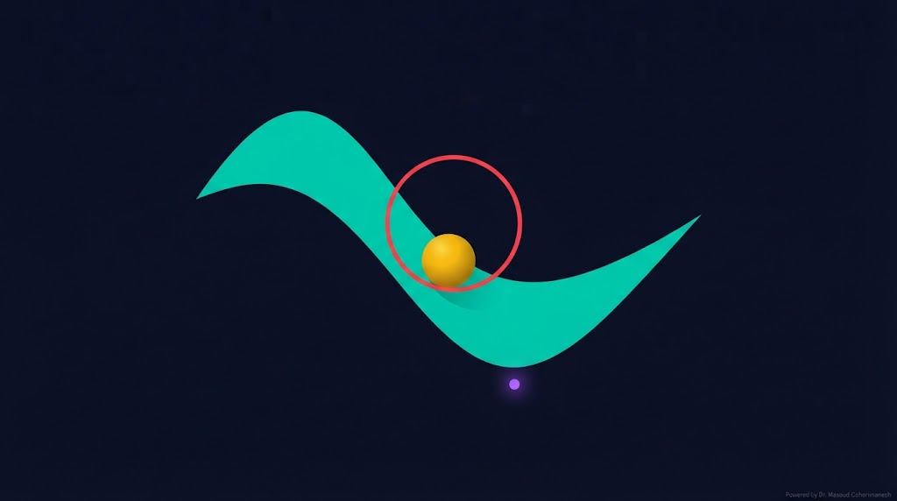
(Constrained Optimization, Lagrange, KKT) — جلسه ۲۲
دکتر مسعود گوهری منش
دانشیار گروه مهندسی مکانیک — دانشگاه تربت حیدریه
در دنیای واقعی، هیچ مسئلهای بدون محدودیت نیست. بودجه، زمان، انرژی، جنس ماده، ولتاژ Pull-in، فرکانس رزونانس — همه اینها قید هستند. یاد میگیریم چگونه این محدودیتها را در بهینهسازی لحاظ کنیم.
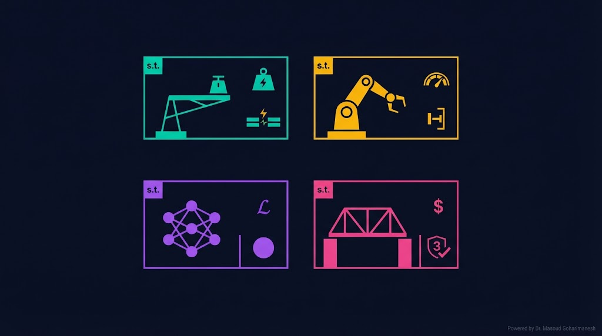
کمینهسازی حجم/وزن، با قید: $V < V_{pull-in}$
کمینهسازی انرژی، با قید: $q_{min} \leq q \leq q_{max}$
کمینهسازی Loss، با قید: $\|\theta\|_2 \leq C$
بیشینهسازی سود، با قید: $\sum w_i = 1$، $w_i \geq 0$
بیشینهسازی بازده، با قید: دما، فشار، ایمنی
کمینهسازی سوخت، با قید: مسیر، زمان
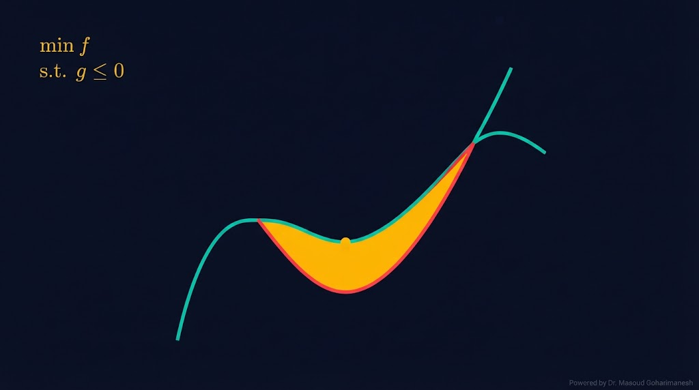
$g_i$ = قید نامساوی | $h_j$ = قید برابری
نقاطی که همه قیدها را ارضا میکنند.
کمترین $f$ در منطقه مجاز.
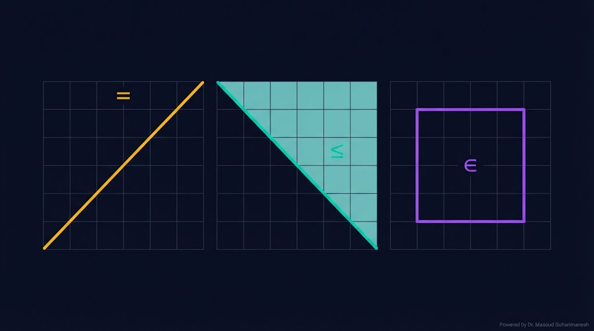
محدودیت دقیق (مثل $\sum w_i = 1$)
محدودیت نابرابر (مثل $V < V_{pull-in}$)
محدودیت بازهای (مثل $q_{min} \leq q \leq q_{max}$)
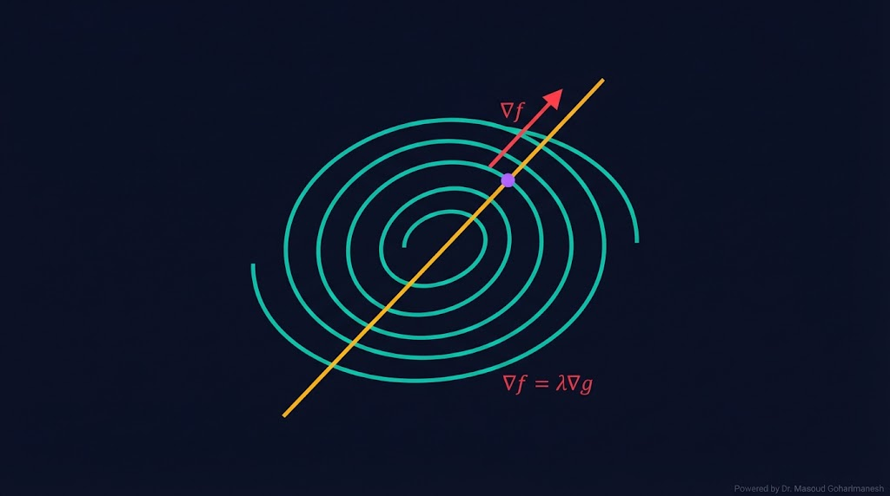
برای مسئله با قید برابری $h(x) = 0$، **تابع لاگرانژ** را میسازیم:
$\lambda$ = ضریب لاگرانژ
$n+1$ معادله و $n+1$ مجهول ($x$ و $\lambda$).
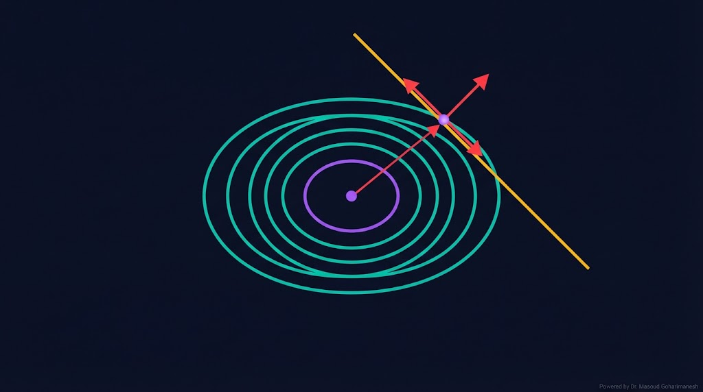
در صفحه ۲بعدی، $\nabla f$ عمود بر خطوط تراز (contours) و $\nabla h$ عمود بر قید است. در نقطه بهینه:
قید قویتر
قید ضعیفتر
قید غیرفعال
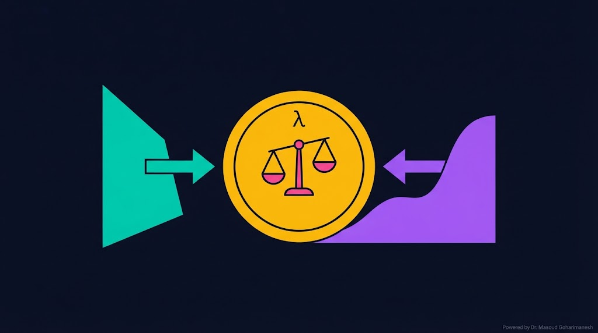
ضریب لاگرانژ $\lambda$ تفسیر اقتصادی مهمی دارد: قیمت سایه (shadow price) یا هزینه نهایی.
که $c$ مقدار قید است. یعنی اگر قید را کمی شل کنیم، چقدر $f$ بهبود مییابد؟
قید فعال، شل کردن سود میدهد
قید فعال، سختتر کردن سود میدهد
قید غیرفعال
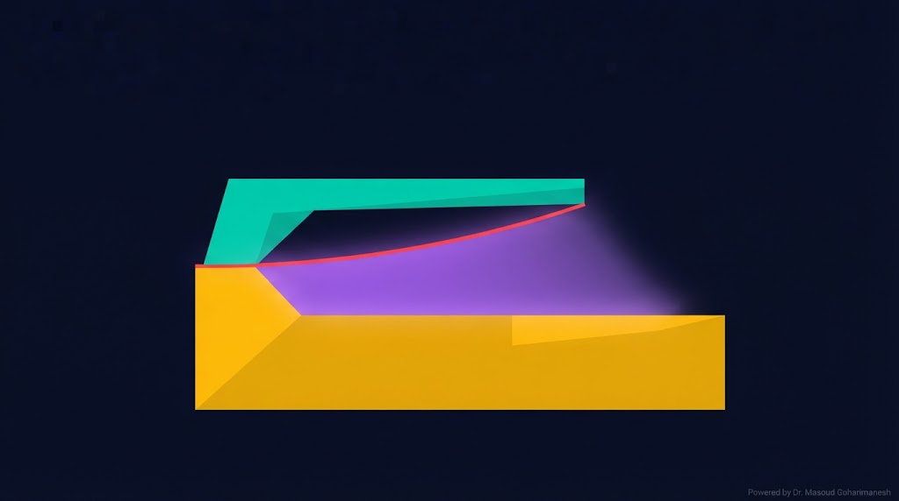
مسئله: کمینهسازی حجم تیر (سبکترین)، با قید اینکه ولتاژ Pull-in از مقدار مشخصی کمتر نباشد:
با $\nabla \mathcal{L} = 0$ به یک سیستم غیرخطی میرسیم که در نقطه بهینه، قید فعال است ($V_{pull-in} = V_{min}$).
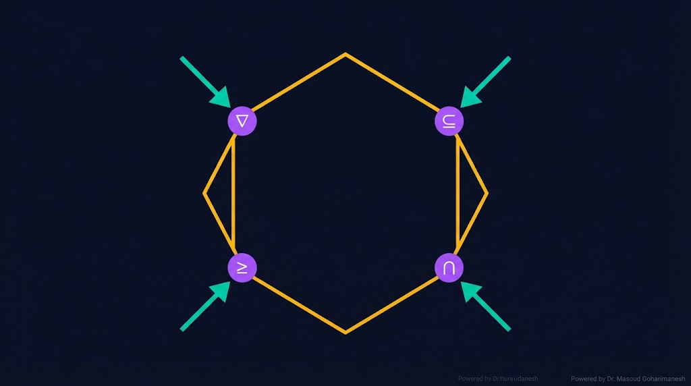
KKT (Karush-Kuhn-Tucker) تعمیم لاگرانژ برای قیدهای نامساوی است. برای مسئله:
تابع لاگرانژ:
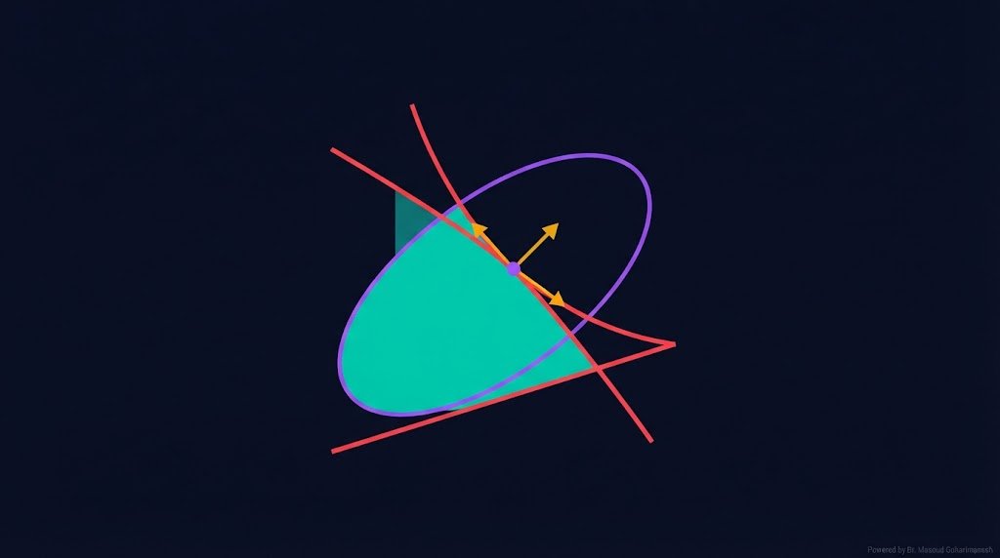
یعنی: یا قید فعال است ($g_i=0$) یا ضریب صفر است ($\mu_i=0$).
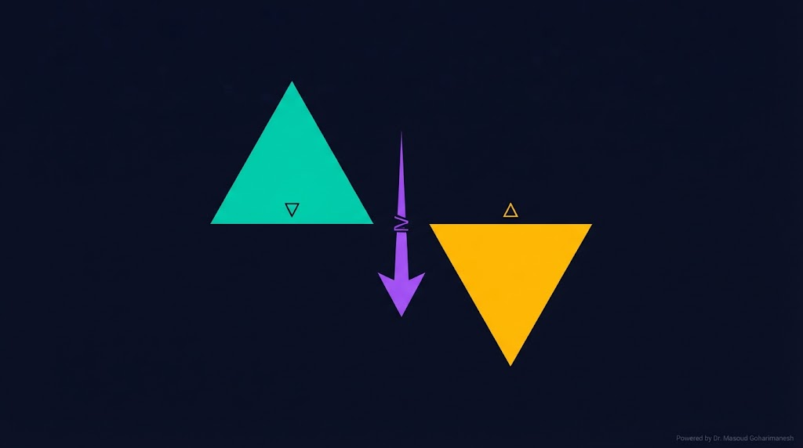
هر مسئله بهینهسازی، یک **مسئله دوگان** (dual) دارد که گاهی حل آن آسانتر است:
جواب: $p^* = \min f$
جواب: $d^* = \max d(\mu)$
اگر محدب و Slater برقرار باشد: $d^* = p^*$ (Strong Duality)
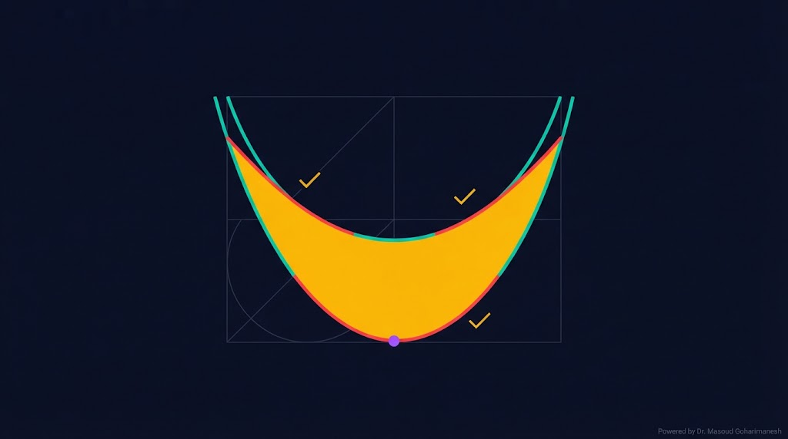
اگر $f$ و $g_i$ محدب و $h_j$ خطی باشند، مسئله **محدب** است:
همه مینیمای موضعی، جهانی هستند
KKT شرط لازم و کافی است
Interior Point، SQP
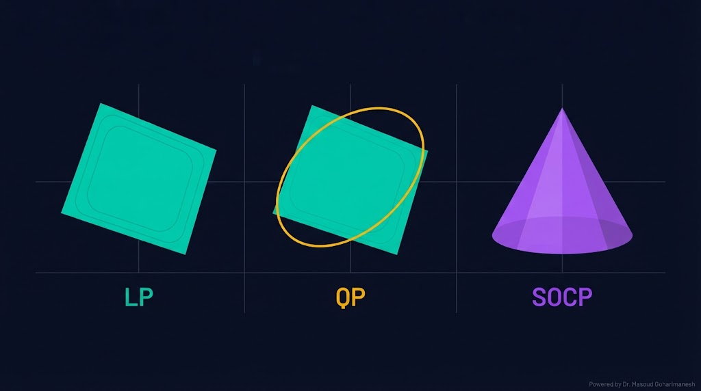
Linear Programming — تابع و قیدها خطی
$f = c^T x$، $Ax \leq b$
Quadratic Programming — تابع درجه ۲
$f = x^T Q x + c^T x$
Second-Order Cone Programming
$\|Ax\|_2 \leq b^T x$
scipy.optimize.linprog، cvxpy.
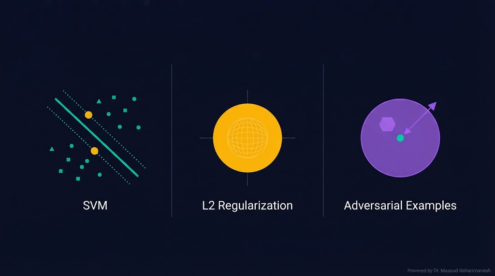
بیشینهسازی حاشیه با قید.
جلوگیری از Overfitting.
مقاومسازی مدل به حملات.
# ============================================ # Lagrange Multipliers (NumPy) # ============================================ import numpy as np from scipy.optimize import minimize # --- مسئله: min x^2 + y^2 s.t. x + y = 1 --- # حل تحلیلی: x = y = 0.5، f = 0.5، λ = -1 def objective(z): x, y = z return x**2 + y**2 def constraint(z): x, y = z return x + y - 1 # = 0 # --- حل با scipy --- cons = {'type': 'eq'، 'fun': constraint} x0 = np.array([0.0، 0.0]) result = minimize(objective, x0, method='SLSQP', constraints=cons) print(f'Optimal x: {result.x}') print(f'Optimal f: {result.fun:.6f}') print(f'Constraint: {constraint(result.x):.2e}') # --- حل با KKT (SVM ساده) --- from scipy.optimize import minimize import numpy as np # مسئله: min 1/2 ||w||^2 s.t. w[0] + w[1] >= 1 # (شبیه SVM با یک نقطه) def svm_obj(w): return 0.5 * np.sum(w**2) def svm_con(w): return w[0] + w[1] - 1 # >= 0 cons = {'type': 'ineq'، 'fun': svm_con} w0 = np.array([0.0، 0.0]) res = minimize(svm_obj, w0, method='SLSQP', constraints=cons) print(f'\nSVM Solution:') print(f'w = {res.x}') print(f'||w||^2 = {res.fun:.4f}') print(f'Constraint active: {svm_con(res.x):.4f}')
# ============================================ # Constrained optimization with PyTorch # ============================================ import torch import torch.optim as optim # --- مسئله: min x^2 + y^2 s.t. x + y = 1 --- # با اضافه کردن جریمه به Loss x = torch.tensor([0.0], requires_grad=True) y = torch.tensor([0.0], requires_grad=True) optimizer = optim.Adam([x, y], lr=0.05) lambda_ = torch.tensor([0.0], requires_grad=True) for i in range(200): optimizer.zero_grad() # Lagrangian: f + λ * h f = x**2 + y**2 h = x + y - 1 L = f + lambda_ * h L.backward() optimizer.step() if i % 50 == 0: print(f'Iter {i}: x={x.item():.4f}، y={y.item():.4f}، ' f'f={f.item():.4f}، h={h.item():.4f}، λ={lambda_.item():.4f}') # --- SVM ساده با KKT --- w = torch.tensor([0.5، 0.5], requires_grad=True) mu = torch.tensor([0.0], requires_grad=True) optimizer = optim.Adam([w, mu], lr=0.05) for i in range(500): optimizer.zero_grad() # Lagrangian: 0.5||w||^2 + μ(1 - w0 - w1) f = 0.5 * (w[0]**2 + w[1]**2) g = 1 - w[0] - w[1] # >= 0 → μ >= 0 L = f + mu * g L.backward() optimizer.step() # Project μ to be non-negative with torch.no_grad(): mu.clamp_(min=0) if i % 100 == 0: print(f'Iter {i}: w={w.detach().numpy()}، ' f'f={f.item():.4f}، g={g.item():.4f}، μ={mu.item():.4f}')
# ============================================ # Constrained Optimization with Augmented Lagrangian # ============================================ import torch import torch.optim as optim import numpy as np def augmented_lagrangian(f, g, x_init, n_iter=500, rho=10): """Augmented Lagrangian method""" x = x_init.clone().detach().requires_grad_(True) lam = torch.zeros(1) optimizer = optim.Adam([x], lr=0.05) for i in range(n_iter): for _ in range(10): optimizer.zero_grad() g_val = g(x) # Augmented Lagrangian L = f(x) + lam * torch.relu(g_val) + (0.5 * rho) * torch.relu(g_val)**2 L.backward() optimizer.step() # Update lambda g_val = g(x).detach() lam = lam + rho * torch.relu(g_val) if i % 50 == 0: print(f'Iter {i}: x={x.item():.4f}، f={f(x).item():.4f}، g={g_val.item():.4f}، λ={lam.item():.4f}') return x, lam # --- مثال: min (x-2)^2 s.t. x <= 1 --- def f(x): return (x - 2)**2 def g(x): return x - 1 # <= 0 x_init = torch.tensor([0.0]) x_opt, lam_opt = augmented_lagrangian(f, g, x_init, n_iter=200) print(f'\nFinal: x = {x_opt.item():.4f} (expected 1.0)') print(f'λ = {lam_opt.item():.4f} (expected 2.0)') # --- مثال: SVM ساده --- def svm_loss(w): return 0.5 * (w[0]**2 + w[1]**2) def svm_constraint(w): return 1 - w[0] - w[1] # <= 0 w_init = torch.tensor([0.5، 0.5]) w_opt, mu_opt = augmented_lagrangian(svm_loss, svm_constraint, w_init, n_iter=200) print(f'\nSVM Solution:') print(f'w = {w_opt.detach().numpy()}') print(f'||w||^2 = {svm_loss(w_opt).item():.4f}')
scipy.optimize حل کنید.ارسال تمرینها:
m.goharimanesh@gmail.com
Subject الزامی:
[Advanced Engineering Mathematics] HW22 - نام و نام خانوادگی - شماره دانشجویی
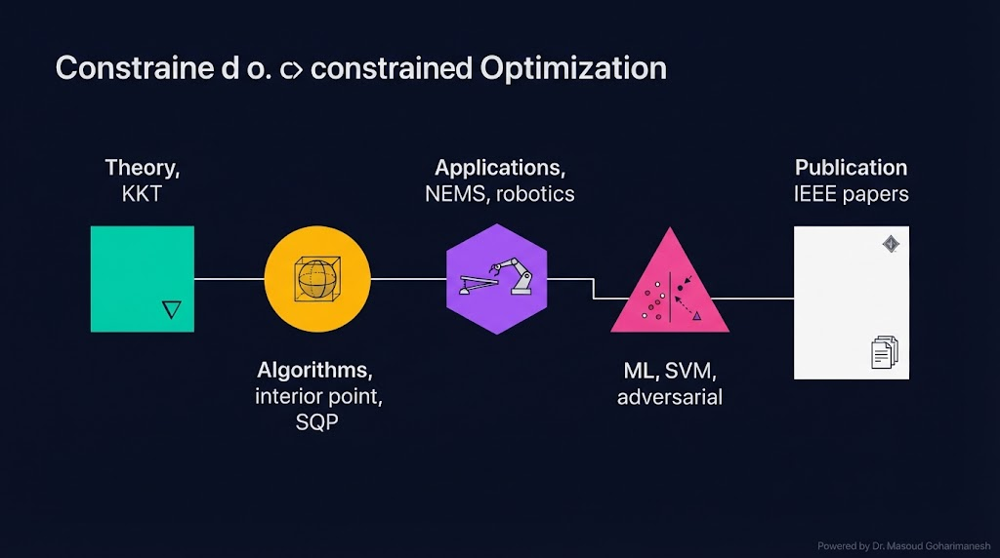
امروز یاد گرفتید چگونه در دنیای واقعی، با محدودیتها بهینه کنید! 🌟
شرط ایستایی KKT — با $\mu_i g_i = 0$ و $\mu_i \geq 0$
بهینهسازی تکاملی: GA و PSO
دکتر مسعود گوهری منش
دانشیار گروه مهندسی مکانیک — دانشگاه تربت حیدریه
🇮🇷 با افتخار برای دانشجویان مکاترونیک 🇮🇷
غیاثالدین جمشید کاشانی (۱۳۸۰–۱۴۲۹ م) در کتاب «مفتاح الحساب» روشهای محاسبه دقیق با محدودیت را بنیان گذاشت:
در بهینهسازی با قید، ضریب لاگرانژ ($\lambda$) همان قیمت سایه است — هزینهی تحمیل یک قید اضافی. کاشانی، هزار سال پیش، این مفهوم را در قالب هندسی درک کرده بود:
همانطور که کاشانی برای محاسبه دقیق سینوس با محدودیتهای هندسی، روشهای تکراری را بنیان گذاشت، KKT نیز برای حل مسائل با محدودیت، شرطهای دقیقی را تدوین کرد. هر دو از یک فلسفه میآیند: دقت در برابر محدودیت.